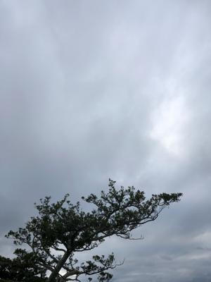
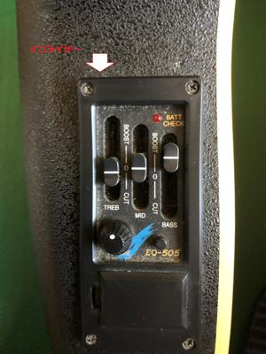
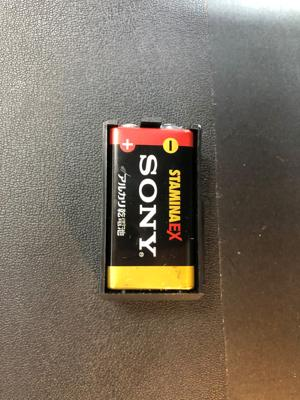
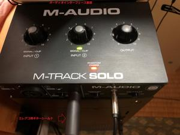

うるがいの話 ある日
最新: イコライザー【うるがいの話 ある日】とは 一日だけのプログです
『うるがいの話』の最新一日だけのプログで、通信料が少なく経済的だ。カニの画像をクリックすると全ての日付が載る『うるがいの話』サイトを表示します
|
|
【うるがいの話】 うるがい(ｳﾙｶﾞｲ urugai)とは、『もずくがに』の名前でとても大きくなります。 |
|---|---|
|
|
【カミマヤーの話】 猫のことを方言でマヤーといいます。カミマヤー（kamimayaa）とは、神の猫のことです。 |
|
【たながぁの音楽】 たながぁ（ﾀﾅｶﾞｰ tanagaa）とは手長えびのことで、何種類かあり大きいのは車 エビぐらいになります。 |

|
【ぶながぁの話】 ぶながぁ(ﾌﾞﾅｶﾞｰ bunagaa)とは、赤い髪の毛、赤い身体、そして身長は１ｍ２０ｃｍ ぐらい、川の蟹を食べているの目撃された。場所は沖縄県国頭郡大宜味村のと ある村僕の隣近所に住んでいる爺さんから、聞いた話です。 |
|
|
【ギーマの話】 ギーマ(giima)とは、山原の里山に咲くスズランに似た、 花を付けます。実は食べられます、 気が付くと口の周りが紫になっています。 |
2022年12月02日 (金）イコライザー
16:11
   
イコライザー（略してＥＱ）とは、音質の補正（平均化）や改善、あるいは積
極的な音作りに使用される特定の周波数帯域を強調または減衰する音響機器の
ことです。
いま使っているエレアコのギターで何やらスイッチが付いている装置が、何た
るか分かった。装置をネットで調べるとどうやら電池があるらしい、マイナス
ドライバーで装置をギターから取り外す（ギターに接着するため止めを壊した
が）。ＳＯＮＹの四角い電池が、付いてあった。そして、ギターとオーディオ
インターフェースを繋ぐコードは、エレアコ用ギターシールドということも判
明。ここまで分かったら、早速使ってみようとギターの弦（控え）を買わなけ
れば、いけないので高良楽器にメールを送信した。
エレアコの備品について
高良楽器店様
始めまして
大昔に高良楽器で ← 大昔とは2007年
エレアコを購入した
ウルガイといいます
9Vアルカリ電池
と
エレアコ用ギターシールド
そちらに在庫ありますでしょうか
値段はいかほどでしょうか
教えて頂けるとありがたいです
よろしくお願いいたします。
しばらくすると、在庫あります、値段もしかじかと丁寧な返信がきた。高良楽
器へ、メールの返信をしてくれた店員さんに教えてもらい一番安いギターシー
ルドを買う。そして、エレアコから録音してみた。ついでに楽譜ソフトのピア
ノの音（サウンドフォント）も、無料で利用できるもをダウンロードし使って
みた。ところどころ、ギターのノイズがあるが、マ、良しとしよう。
1.今朝録音したもの
2.２０２１年１０月１３日にスマホで録音したもの、音色がこもっている。
朝４時半に起き、テレビでサーカーの試合を見ると１点負けていた。前半が終
わり、休憩時間にいつもの瞑想をしていた。そして、再びテレビを見ると２点
目のビデオ判定の様子を放送されている、アレ？、１点目のゴールは？、目を
閉じている間の事だった。それからは、目を外さず試合が終わるまでみる。後
半開始６分間の出来事だったとは、ライブはこれだから。
１５時５１分 ビットコインの総資産 ￥６、６６６↓（フォーカードだ）